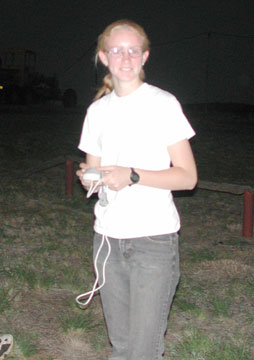
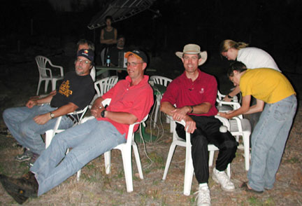

|  |
The observation session was arranged by the Alice Springs Astronomical Society in conjunction with two visiting astronomers from San Francisco, who were working on a Leonids project as volunteers of NASA's Ames Research Center. Morris "Mojo" and Jane Houston Jones are a couple from Marin County, California, who have been enthusiastic amateur astronomers for most of their lives. They brought along hardware and software that allowed observers - usually about eight at a time - to count Leonids in real time with a click of their individual mouses (mice?). (Website at: http://leonid.arc.nasa.gov/)
After a trial run on the night of November 17, we all met at the Bond Springs Station about 20 kilometers outside of Alice (23° 32' 38" S, 133° 55' 18" E) at about 1830, so we could look over the site in daylight. Kelsie helped check up the observers ring, a set of white plastic garden chairs set out in a field with a view in all directions. Each chair was equipped with a mouse port that fed data into Mojo's laptop. The viewing site was within about 100 meters of the nearest phone line, so the data could be shipped back to NASA via the internet as it was gathered. Then we broke for a barbecue at the station as the sun went down.
After dinner my friend Vern and I set up our telescopes down the road apiece for an informal star party, knowing that the Leonids wouldn't start flying until after midnight. I brought my venerable homemade 6" Newtonian Dobsonian, but Vern stole the show with his new Celestron 11" GPS Nextstar. I have only one thing to say about this telescope: if you can afford it, order one from Celestron now. This is the best viewing I've ever had through a commercial scope: tack sharp, bright, quiet, and just about totally automatic - its built in GPS receiver tells it where it is, and then it goes to work. Truly excellent optics. As he's remarked in the past, "I don't know about anything else, but with telescopes size does matter." Okay, it's not exactly man-portable, but Vern is pretty hefty, so he has no problems moving his new scope around.
The new moon was the first target, and we were easily able to pick out individual details by the Earth shine alone with this monster scope. Even my Dob picked up quite a bit under the excellent viewing conditions. We then ran through a bunch of the basics for club members and guests who were staying at the station (it's also a casual resort).
By 2230 local we were back at the Leonid observation site, and did some final checks to make sure the equipment was up and running - everything worked like a charm. We then did individual tests for limiting magnitude - most people ended up getting down to 6.0 or 6.1 - a very clear dark night, with just a bit of wind.
I have to admit that I punked out at this point, as did Kelsie. She crashed in one of the cabins, and I stretched out on my chaise lounge with a horse blanket to snooze for a while. At 0130 my eyes snapped open as I heard cheers way beyond what you get at fireworks displays as a massive fireball came up over the eastern horizon, zipped right overhead, and continued on over to the western horizon, leaving a bright train that glowed for minutes high in the atmosphere. The best meteor I'd ever seen in my life, up to that moment.
|  |
The show continued on from there. Usually at least two or three meteors - and I'm talking magnitude 2 to -2 - were visible at any one time. During the peak of the shower Mojo's software told us that they were coming at a rate of over 2,000 per hour. When you stood up and looked around entering debris could be see in every direction: bright slow ones, faint fast ones, luminous trains like contrails glowing across the sky; meteors coming directly at us like a ball of flame, a Buck Roger's spaceship trailing sparks and debris as it drilled towards my nose. They were everywhere.
Quite frankly it was more and better meteors than I've ever seen in my life, and better than most fireworks displays I've ever seen. I ended up logging 1,596 Leonids, and maybe 10-15 sporadic meteors. Towards the end of the night the radiant of the Leonids was more than apparent, it was a fact of life, like a giant astronomy experiment you've only read about and now see come true.
Kelsie did a great job contributing to the observation team's success. She logged just over 1,000 Leonids, and did her work with enthusiasm and competence. And she had a great time.
The only drawback was the white plastic lawn chairs we had to sit in - these definitely came from the low-bidder on a NASA contract! Luckily we had several comfortable chairs and some swags (sleeping bags) along.
Everyone else on the team was right there, too. Jane and Mojo were well-prepared and competent organizers and observers. They did this work because they love it, and it showed.
Altogether, one of the great observing events of my life, and I doubt it will be repeated. Even as the sky brightened before dawn, raw streaks of light could still be seen, along with several satellites in low-Earth orbit, evidence that we'd passed unharmed through the storm again.